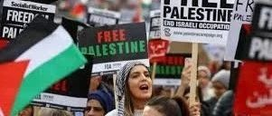

不在街头，还有哪些方式可以支持斗争
原创
阿点
QueerMouseCave
2024年05月04日 21:54
荷兰
原文来自于DisabilityVisibilityProject，发表于2020年的BLM运动期间，但对于近期的支持巴勒斯坦运动也很有参考意义。部分段落有删减。保留了原文关于新冠的内容，因为虽然大流行已经“结束”，但对于免疫脆弱的残障社群来说，文中提到的防护措施是生活常态。全文约4060字。
这份清单旨在庆祝我们的社群参与解放的所有方式。由于各种原因，有些人无法参加集会和抗议，但ta们也为结束警察和国家针对黑人的暴力行为做出了贡献。
人们以各种方式寻求正义、支持解放，但ta们的身体、精神和生活状况可能无法走上街头。我相信我们会取得胜利，并且这需要每个人的贡献。
我们认可所有贡献都是政治性的、战斗性的、有价值的。
对于社群中那些无法上街的人，我们提供了一系列我们每天可以并且确实支持解放的具体方法。我们支持你，我们就是你。抗争中见。
1.举办或参加“了解你的权利”培训，以教育你自己、你的亲友和社群，在与警察互动时知晓自己的权利。
举办这些培训的组织列表的链接：http://tiny.cc/BTSresources
2.向致力于黑人解放和反对警察暴力的组织捐款、在线筹款或捐赠商业收益。还可以通过 Venmo 或 Cashapp 向黑人行动者和组织者提供租金、食品、药品的资金。
获取捐赠地点列表及更多信息：http://tiny.cc/BTSresources
3.通过社交媒体、短信、电子邮件、电话和面对面的方式，传播有关集会、行动、活动和诉求的信息。使用 #BlackLivesMatter 和 #DefendBlackLives 等话题标签来放大社交媒体上的信息。
4.主动担任参加游行和集会的人们的紧急联系人。获取对方的全名和出生日期、医疗信息（如果ta们愿意分享），以及ta们希望在被拘留或受伤时通知的联系人。记下国家律师协会 (www.nlg.org)、看守所、当地警局和医院的电话号码。每小时通过短信询问一次，了解ta们的行踪和当前的抗议状况。
这是一份关于如何担任该角色以及记录哪些有用信息的指南
（译注：文档已失效）
。请注意，
不要在Google在线文档存储个人信息
——如果被传唤，谷歌会交出此信息！相反，最好打印下来再填写。
5.参加反警察暴力和反罪化（anti-criminalization）团体的规划会议或战略呼吁。分享并参加讨论种族主义的活动。在提供支持之前，首先考虑哪些人在组织或团体中拥有权力和领导地位，并
优先考虑那些以黑人的声音和领导为中心的组织。
6.支持、参加或组织治愈正义活动。Adrienne Maree Brown、Adaku Utah、Leah lakshmi piepzna-samarasinha和usan raffo 创建了一份疗愈实践清单，来维持抗议中的关怀照料。
链接：tiny.cc/BTSresources
7.在游行后做饭，或为参加抗议游行的人们打包食物。如果距离较远或在大流行期间需要保持社交距离，请主动订购送餐或支付杂货费用，以帮助人们在活动后恢复能量。
8.为抗议者和前线的人协调或提供儿童照看服务。因为我们正处于大流行之中，所以先想清楚照顾孩子的工作是否适合你——这会带来传播病毒的风险，因为你将直接接触一个群体，而这些人们长期接触人群，可能会传播病毒，或被警察逮捕/拘留。如果你负责托儿服务，请尽量保持人数规模较小（例如不超过几个家庭），以防小组中的任何人感染新冠之后的交叉感染。你还需要制定计划，为任何情有可原的情况（例如逮捕）做好准备。照顾孩子只有当照看者与小孩有牢固联系时才有意义，以防孩子与父母或看护人分开的时间比计划的长。最好在家里规划照看小孩，而不是在街头行动中，以防发生任何事情，比如需要过夜。你还需要考虑任何法律影响，以防家长被捕可能危及监护权，以及它如何影响谁来负责照顾孩子。
9.创作与警察暴力、黑人社区刑事定罪相关的艺术、音乐、诗歌、故事、图画和视频，创作关注社会正义、抗争、团结和韧性的故事和图像。创作新的口号、标语，询问组织者需要设计什么。支持受这些斗争影响的黑人艺术家和有色人种的工作。资助和投资黑人艺术家、文化工作和想法。这可以扩大受众、传播作品并支持黑人艺术家继续创作实践。
文化工作就是抵抗！
10.创建一个过夜基地，让抗议者可以在室内一起进行身心休息。家庭基地也可以成为聚集紧急联系人／为抗议者提供其它远程支持的人员的绝佳场所。由于大流行，你可能无法提供自己的家作为线下基地。但可以通过在线交流提供支持、做某人的紧急联系人、保存健康信息、保释金、法律信息、亲友信息，来应对紧急状况。
11.如果你是白人或非黑人的有色人种，请继续反思您的身份，以及种族主义的历史、你的同胞和黑人社区之间的盟友或团结的历史。找到志同道合的人一起参加工作坊，并与家人、朋友、同事和社区成员进行对话，以帮助建立反种族主义的意识和团结性。直接向你身边的黑人、黑人组织、黑人领导的倡议组织、黑人艺术家和救助资金 投资和分配资源，包括专门针对支持跨性别、非二元性别、移民和无证黑人的救助资金。利用线上媒体反映受到影响的黑人的观点。成为社交媒体上黑人活动家发声、参与、号召和出面的渠道。作为非黑人有色人种，
扩散信息就是出面支持
。
12.做一个帮助落地（grounding）或自我照顾的伙伴：在某人出发之前与ta交谈和倾听，帮助制定游行之后的落地计划；在家中定时给发短信，友好地提醒ta喝水、深呼吸等；提醒并支持ta照顾自己的个人需求；发送表情包、梗图或任何可以帮助这个人的内容，并让ta在行动结束回家后给你发短信。
这是针对所有经历过警察暴力的人的草药急救善后指南。https://drive.google.com/file/d/14nVeF6auCIqQRBh-q3gyEmV5POiYur_Z/view
如果你能种植和酿造草药，请把这些重要技能提供给需要支持的人（尤其是免疫和呼吸系统脆弱的人），因为ta们在大流行期间在街头采取了重要行动。
13.对于有身体疼痛、行动不便或心理健康问题，并希望参与街头行动的朋友，请主动帮助制定安全计划：ta们之前和之后可能需要什么，需要携带哪些药物（可能需要2-3天的剂量 ），熟悉彼此路线，帮ta们找2-3个联系人，以备紧急情况或保释。在计划中包含自我照顾的边界，例如预先确定在街上花费的时间、什么东西有助于预防或延缓疼痛或焦虑、要警惕疼痛发作或心理健康挑战的哪些迹象、提前让ta们同意在出现第一个迹象时就提前退出，如果被触发或受伤时ta们要做什么/去哪里，提前设置在游行之后的安抚活动。此外，如果药房和商店关闭，请提供医疗需求和评估方面的支持。如果你能买得起或有多余的医疗用品、辅助设备、口罩和药物，请与黑人和受到影响的人分享。
14.如果你有一个灵性实践社群，这是一个很好的机会聚在一起、共同努力支持该运动。可以打开空间让ta人加入一起冥想、祈祷、诵经、唱歌、练习剑道、制作祭坛等。如果你有练习的物理空间，也可以邀请需要休息、水、食物、温暖的抗议者进来。在新冠期间，考虑设立一个保持社交距离的空间，提供食物、情感支持、口罩、洗手液、手套等。
15.当前线小组动用大部分资源让人们走上街头时，ta们需要志愿者提供 IT 支持、收集所需物资、接听电话、输入和上传数据、整理和存储文档。向这些小组询问志愿者工作和组织需求。如果你有汽车或自行车，可以考虑成为物资、食品、材料和应急物资的交通枢纽。
16.如果你是一位有经验的教育工作者，请编写有关课程，并支持其它教育工作者讨论这些问题。与教师们召开电话会议，制定计划与学生讨论正在发生的事情以及ta们如何参与。为黑人生活付费和投资，如果黑人社区感兴趣，可以邀请对方加入你的活动和课程。倾听黑人学生的声音，了解黑人青年的组织工作。
17.发挥你的技能。你是否在组织示威、培训安保或执法人员、缓和冲突、提供监狱支持、担任法律观察员、举办培训、设计图片或其它线上组织工作方面有经验？如果有，可以创建教学文档，并在人们走上街头之前进行一对一技能培养。
18.为黑人、酷儿、跨性别者、残障者、老年人、无证移民社区成员留出空间，这些成员因任何原因无法参加抗议活动，但仍受到严重影响和受到监察。这包括黑人社区中的病人、残障者和有心理健康困扰的人。
19.举办空间和组织活动，关注那些缓刑或假释的黑人经历，让ta们谈论在过度治安、政府监管、监禁和国家暴力中幸存的经历。
20.通过Skype、Zoom、电话、短信、探访，向那些在抗议中遭受痛苦、受伤、催泪瓦斯、警察暴力、身体和情感暴力的人们表达爱意。定期跟进ta们的状况，确认ta们的需求并建立支持网络。请记住，国家暴力会影响我们的精神状况。
21.通过传播突发新闻或街头行动、抗议和事件的视频，来帮助扩大抗议活动，以便吸引更广泛的受众。除非获得许可，否则务必小心不要分享他人的脸部图像。
如果需要，可以模糊识别细节，使用表情符号遮盖ta们的面部和识别特征。如果您需要发布图片，先屏幕截图再发布，而不是用原始图片，以避免元数据与图像一起传输。
22.如果你会说多种语言，可以翻译文件和报道，
向非英语媒体传播抗议活动
。如果被请求，可以担任抗议活动的场外发言人或媒体联系人。如果有需要，可以主动帮助撰写建议和媒体新闻稿。
23.支持盲人、聋人、听障人士、神经多元人士以及具有各种学习障碍的人士 获得无障碍服务。可以为图像编写标题、以传达照片中的信息，并采取各种方法让这些材料易于理解。
24.如果你有相关技能或可以提前进行一些研究，请帮助你的社区制定计划，在人们走上街头时与数字监控斗争。了解如何安全使用加密聊天软件，并教给人们如何安装和使用。获取布料并制作DIY法拉第袋送给那些上街的人，指导人们禁用 FaceID/指纹并将其替换为 6 位 PIN 码，帮助人们禁用 iCloud 或 Google 数据同步等等。如果可以的话，举办一次培训，编写适合社交媒体传播的抗议活动数字安全指南。
25.与亲近的人交谈。讨论并采取措施，结束工作场所、学校、图书馆、宗教社区或家庭中针对黑人社区的刑事定罪和国家暴力。依靠在这些群体中的信任关系，改变这些空间内的政策和权力分配，以塑造对话和物质条件。为了进行这些对话，要承担风险并放弃权力，即使在困难的情况下也要坚持。
26.
照顾好你自己！自我照顾是一项革命性的行动。
对黑人社区的刑事定罪、警察暴力以及生命的贬值都很令人痛苦。这些不仅会造成创伤，还会带来替代性创伤，削弱我们个人和集体争取解放的能量。远离电脑、社交媒体或电视，花点时间记住我们为了什么而奋斗：我们所爱的人和我们称之为社群的人。在这些时候，让自己感受、表达愤怒、哭泣、体验喜悦，不仅关键而且必要。
参与贡献的作者名单：Ejeris Dixon, Piper Anderson, Kay Ulanday Barrett, Ro Garrido, Emi Kane, Bhavana Nancherla, Deesha Narichania, Sabelo Narasimhan, Amir Rabiyah, and Meejin Richart. 设计：Alana Yu-lan Price. 无障碍版本制作者：Alejandra Ospina and Akemi Nishida.